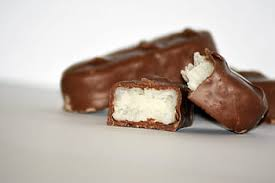

..Sağlıklı Cocostar..
Çocukluğumuzun lezzeti hiç bu kadar sağlıklı olmamıştı:)
Tarif:İdil Yazar
MALZEMELER
- 150 gr. Bitter çikolata
- 1 bardak Hindistan Cevizi
- 1 yemek kaşığı Bal
- 2 yemek kaşığı Hindistan Cevizi Yağı
- Vanilya Özütü
- Tuz
Adımlar
- Çikolata hariç bütün malzemeyi doğrayıcıdan geçirin.
- Karışan malzemeyi ayrı bir kaba alıp yoğurun.
- Karışımdan ceviz büyüklüğünde parçalar alarak bastırarak
şekil verin(eliniz ıslak olursa daha rahat şekil verebilirsiniz) - Buzlukta yaklaşık 30 dakika bekletin.
-
100 gr.çikolatayı eritin ,kalan 50 gr.çikolatayı da ekleyip
tamamen eriyinceye adar karıştırın. - Barları çikolataya batırın.
- Yağlı kağıt üzerine alarak 10 dakika buzdolabında bekletin.